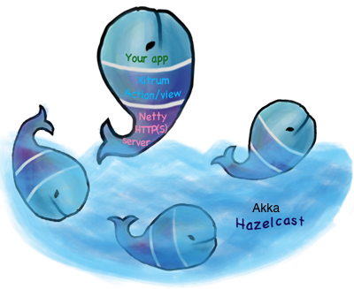

Wow, this is a really impressive body of work, arguably the most complete Scala framework outside of Lift (but much easier to use). Xitrum is truly a full stack web framework, all the bases are covered, including wtf-am-I-on-the-moon extras like ETags, static file cache identifiers & auto-gzip compression. Tack on built-in JSON converter, before/around/after interceptors, request/session/cookie/flash scopes, integrated validation (server & client-side, nice), built-in cache layer (Hazelcast), i18n a la GNU gettext, Netty (with Nginx, hello blazing fast), etc. and you have, wow.
import xitrum.Action
import xitrum.annotation.GET
// This action runs on Netty's IO thread.
// If you want it to run on another thread
// (thread pool), extend xitrum.FutureAction.
@GET("url/to/HelloAction")
class HelloAction extends Action {
def execute() {
val urlToHelloActor = url[HelloActor]
respondHtml(
<xml:group>
<p>Hello {remoteIp}!</p>
<a href={urlToHelloActor}>Actor sample</a>
</xml:group>
)
}
}
Just annotate your actors and they will be accessible from web!
import scala.concurrent.duration._
import akka.actor.ReceiveTimeout
import xitrum.{ActorAction, Config}
import xitrum.annotation.GET
@GET("url/to/HelloActor")
class HelloActor extends ActorAction {
def execute() {
log.info("Actor started, remoteIp: " + remoteIp)
val anotherActorRef = actorFor("someService")
anotherActorRef ! "someRequest"
context.setReceiveTimeout(5.seconds)
context.become {
case someResponse =>
respondText("Response: " + someResponse)
case ReceiveTimeout =>
respondText("Timeout")
}
}
override def postStop() {
log.info("Actor stopped")
super.postStop()
}
}
import xitrum.{
Action, WebSocketAction,
WebSocketText, WebSocketBinary,
WebSocketPing, WebSocketPong
}
import xitrum.annotation.WEBSOCKET
@WEBSOCKET("url/to/EchoWebSocketActor")
class EchoWebSocketActor extends WebSocketAction {
def execute() {
log.info("onOpen, remoteIp: " + remoteIp)
context.become {
case WebSocketText(text) =>
respondWebSocketText(text)
case WebSocketBinary(bytes) =>
respondWebSocketBinary(bytes)
case WebSocketPing =>
// Xitrum automatically sends pong for you,
// you don't have to send pong yourself
case WebSocketPong =>
// Client has received your ping
}
}
override def postStop() {
log.info("onStop")
super.postStop()
}
}
import xitrum.{Action, SockJsAction, SockJsText}
import xitrum.annotation.SOCKJS
@SOCKJS("url/to/EchoSockJsActor")
class EchoSockJsActor extends SockJsAction {
def execute() {
log.info("onOpen, remoteIp: " + remoteIp)
context.become {
case SockJsText(text) =>
respondSockJsText(text)
}
}
override def postStop() {
log.info("onStop")
super.postStop()
}
}
Scalibility is easy, just throw more nodes to the pool.
See xitrum-new project. Download xitrum-new.zip, unzip, then run:
sbt/sbt runNow you have a new empty project running at http://localhost:8000/ and https://localhost:4430/
Find more about Xitrum source code